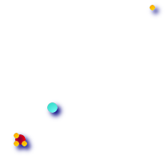

名前
ST_GeometricMedian — マルチポイントの幾何学的中央値を返します。
概要
geometry ST_GeometricMedian ( geometry g , float8 tolerance , int max_iter , boolean fail_if_not_converged );
説明
マルチポイントジオメトリの幾何学的な中央値の近似値を、Weiszfeldアルゴリズムを使って計算します。幾何学的な中央値は、重心よりも、点がはみ出しにくい中心性計測です。このアルゴリズムでは、成功した回次の間の距離の変化が、toleranceパラメータよりも小さくなるまで繰り返します。max_iterations回を超えた場合には、関数はfail_if_not_convergedをFALSEに指定している場合を除いて、エラーを生成して終了します。toleranceが与えられていない場合には、デフォルトの許容値は入力ジオメトリの範囲を基にして計算されます。
Availability: 2.3.0
 This function supports 3d and will not drop the z-index.
This function supports 3d and will not drop the z-index.
例

4点のマルチポイント (黄色の点)から得た重心 (青緑色の点)と幾何学的中央値 (赤色の点)との比較。
WITH test AS (
SELECT 'MULTIPOINT((0 0), (1 1), (2 2), (200 200))'::geometry geom)
SELECT
ST_AsText(ST_Centroid(geom)) centroid,
ST_AsText(ST_GeometricMedian(geom)) median
FROM test;
centroid | median
--------------------+----------------------------------------
POINT(50.75 50.75) | POINT(1.9761550281255 1.9761550281255)
(1 row)